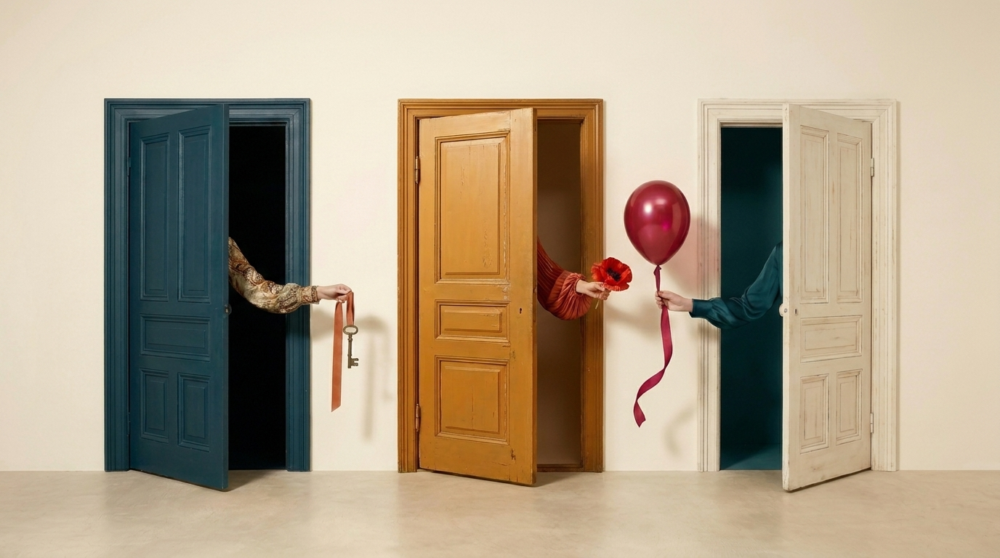
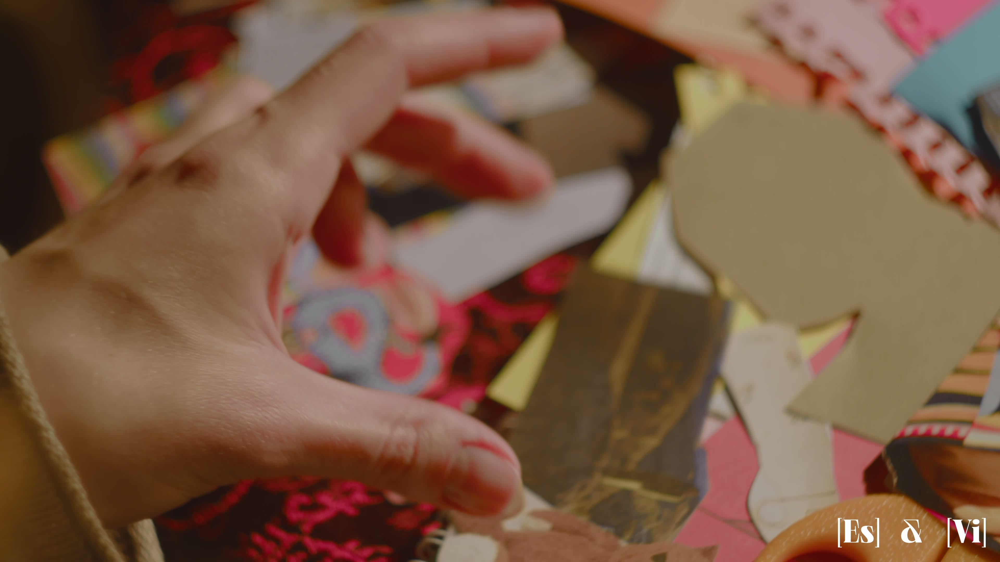

Почему дверь стала главным образом проекта и что означают девять предметов, которые протягивает рука. С короткой библиотекой: ван Геннеп, Тёрнер, Башляр, Макклауд.
Читать →
Сначала руки, потом разговор. Почему слова врут, а краска нет, и чем метод отличается от арт-терапии и урока рисования.
Читать →
Автопортрет, абстракция, коллаж, реди-мейд, рисунок цветом. Какая практика какую грань личности открывает и почему порядок не случаен.
Читать →
Четыре главных страха на входе и честные ответы. За каждым «я не умею» прячется облегчение.
Читать →
Прямые критерии, чтобы вы пришли на своем месте. Кому метод подходит сейчас, а кому пока не время, и почему это не «никогда».
Читать →
Не папка со слайдами, а свои работы на стене, увиденные паттерны и одна неудобная мысль. Стратегия в файле забывается, на стене нет.
Читать →
Четыре формата от короткого к глубокому: экспресс-практика, демо-сессия, полный курс и командная сессия. Как выбрать под задачу.
Читать →